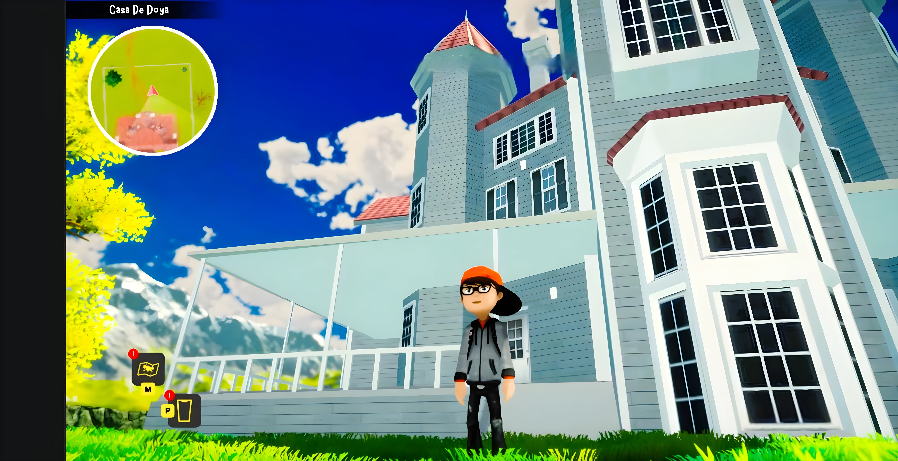

PROJECT SUPERFUN
A technical deep dive into next-generation real-time synchronization, custom shader graphs, and memory optimization for large-scale interactive environments.
DEMO_FEED // LIVE_PREVIEW
PROJECT SUPERFUN DEMO
Autoplaying muted · Loops continuously
01_OVERVIEW
Superfun required a paradigm shift in how we handle concurrent entity updates across distributed client instances. The goal was 100% visual parity with sub-50ms latency.

MODULE_A
Real-time dynamic mesh deformation logic

MODULE_B
Low-latency UDP packet prioritization
02_TECHNICAL_ARCHITECTURE
REF_ID: SYNC_LOGIC_V4SYSTEM_SYNC
Our proprietary sync logic utilizes deterministic lockstep for physics calculations combined with state-interpolation for cosmetic updates.
MEMORY_ALLOC
Custom pooling system for all projectile and VFX entities, reducing GC pressure to near-zero levels during peak gameplay.
THREAD_MGMT
Asynchronous loading of world chunks using C# Job System and Burst Compiler for maximum throughput.
03_PERFORMANCE_BENCHMARKS
04_INTERFACE_DESIGN
Shader_Graph_Details

Custom PBR shader implementation with dynamic weather wear-and-tear parameters.
Wireframe_Architectures

Minimalist HUD design focusing on data hierarchy and peripheral vision awareness.